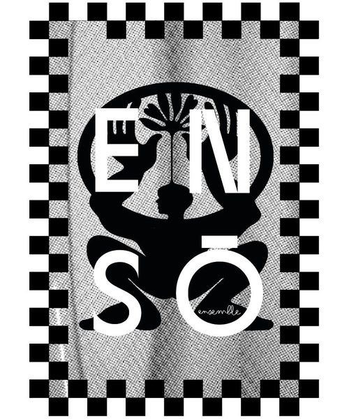
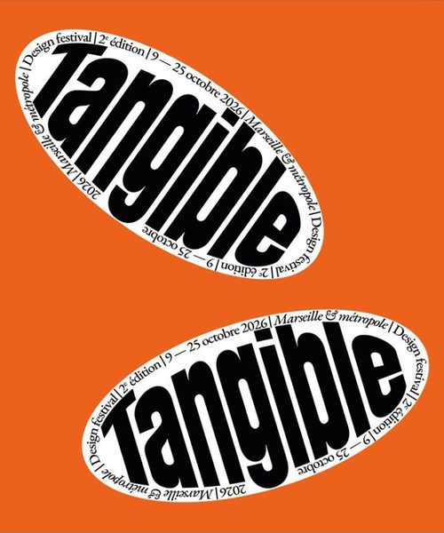

Chiche ! - festival Tangible
23.10.2026
Finissage de Chiche ! Le design au Sud à Vidéochroniques, Marseille. Performance et activation de la sculpture-agrès du collectif ENSŌ ENSEMBLE


23.10.2026
Finissage de Chiche ! Le design au Sud à Vidéochroniques, Marseille. Performance et activation de la sculpture-agrès du collectif ENSŌ ENSEMBLE


19.05-05.06.2022
Exposition de O au parc de la maison blanche à Marseille


30.11-11.12.2021
Exposition de Luna au salon Rocalia et dans le showroom d'iGuzzini à Lyon


08.09.2020
→ ARTICLE

03-12.09.2020
Exposition des Lauréats du concours Sidobre Grand Sud. Cadran a eu le prix design produit avec Jimena Zúñiga


01.05.2020
Publication L’art du luxe n°6 corse-matin


07.12.2019
avec Romain Rancurel-Giannoni


10.10.2019
Lauréat du Concours Sidobre Grand Sud organisé par l'association Granit et Pierres du Sidobre


20.10.2018
Le Monde n°370, spécial design, le passé au goût du jour


25.09.2018
→ LIRE L'ARTICLE11.09.2018
→ LIRE L'ARTICLE